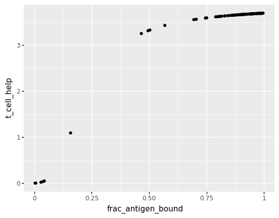
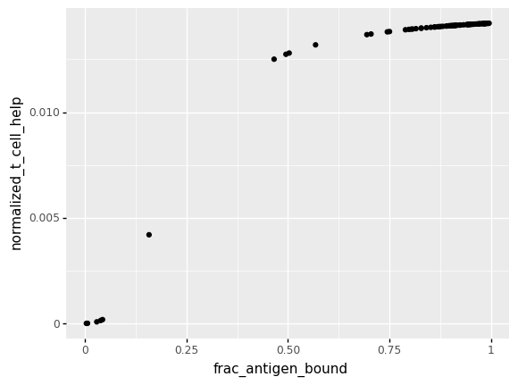
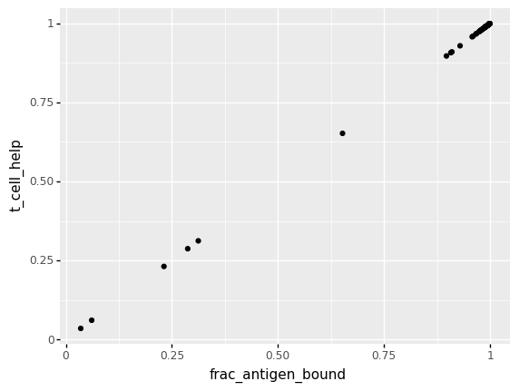
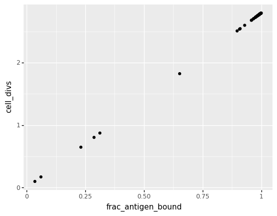
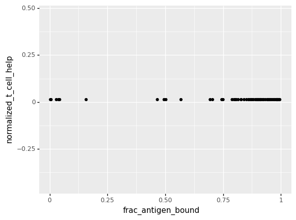

Creating DMSPhenotype and Fitness objects
from gcdyn.fitness import Fitness
from gcdyn.phenotype import DMSPhenotype
from Bio import SeqIO
dms_phenotype = DMSPhenotype(
1,
1,
336,
"https://raw.githubusercontent.com/jbloomlab/Ab-CGGnaive_DMS/main/data/CGGnaive_sites.csv",
"Linear.model",
["delta_log10_KD", "expression"],
-10.43,
)
fasta_path = "gcreplay_samples/gctree_PR1.2-5-LP-78-GC.fasta"
seqs = [
str(seq_record.seq)
for seq_record in SeqIO.parse(fasta_path, "fasta")
if seq_record.id != "naive"
]
fit = Fitness(Fitness.sigmoidal_fitness)
fitness_df = fit.normalized_fitness_df(seqs, calculate_KD=dms_phenotype.calculate_KD)
Testing different antigen concentrations vs antigen bound
import pandas as pd
from plotnine import ggplot, geom_histogram, aes, facet_wrap, ggtitle, xlim, ylim
antigen_bound_fracs = []
concentrations = []
def frac_antigen_bound(
sequence_KDs: list[float], concentration_antigen: int
) -> list[float]:
thetas = []
for seq_KD in sequence_KDs:
theta = concentration_antigen / (seq_KD + concentration_antigen)
thetas.append(theta)
return thetas
for c in range(6, 11): # concentration of antigen from 10^-6 to 10^-10
concentration_antigen = 10 ** (-1 * c)
fit = Fitness(Fitness.sigmoidal_fitness, concentration_antigen)
antigen_bound_fracs.extend(
frac_antigen_bound(fitness_df["KD"], concentration_antigen)
)
concentrations.extend([concentration_antigen] * len(fitness_df["KD"]))
antigen_bound_df = pd.DataFrame(
{"concentration_antigen": concentrations, "frac_antigen_bound": antigen_bound_fracs}
)
(
ggplot(antigen_bound_df)
+ facet_wrap(facets="~concentration_antigen")
+ aes(x="frac_antigen_bound", color="factor(concentration_antigen)")
+ geom_histogram(binwidth=0.05)
+ xlim(0, 1.05)
)
/Users/alyssa/miniconda3/envs/gcdyn_39/lib/python3.9/site-packages/plotnine/utils.py:371: FutureWarning: The frame.append method is deprecated and will be removed from pandas in a future version. Use pandas.concat instead.
/Users/alyssa/miniconda3/envs/gcdyn_39/lib/python3.9/site-packages/plotnine/layer.py:401: PlotnineWarning: geom_histogram : Removed 10 rows containing missing values.
<ggplot: (8783282393516)>
Mapping to fitness (sigmoidal)
from plotnine import geom_point
fitness_df["frac_antigen_bound"] = frac_antigen_bound(fitness_df["KD"], 10**-10)
ggplot(fitness_df) + aes(x="frac_antigen_bound", y="t_cell_help") + geom_point()

<ggplot: (8783282270058)>
Normalized fitness (T cell help)
(
ggplot(fitness_df)
+ aes(x="frac_antigen_bound", y="normalized_t_cell_help")
+ geom_point()
)

<ggplot: (8783282424826)>
print(fitness_df)
seq KD \
0 GAGGTGCAGCTTCAGGAGTCAGGACCTAGCCTCGTGAAACCTTCTC... 1.019846e-10
1 GAGGTGCAGCTTCAGGAGTCAGGACCTAGCCTCGTGAAACCTTCTC... 4.797376e-12
2 GAGGTGCAGCTTCAGGAGTCAGGACCTAGCCTCGTGAAACCTTCTC... 2.203513e-09
3 GAGGTGCAGCTTCAGGAGTCAGGACCTAGCCTCGTGAAACCTTCTC... 8.136458e-12
4 GAGGTGCAGCTTCAGGAGTCAGGACCTAGCCTCGTGAAACCTTCTC... 1.152404e-11
.. ... ...
72 GAGGTGCAGCTTCAGGAGTCAGGACCTAGCCTCGTGAAACCTTCTC... 1.887426e-11
73 GAGGTGCAGCTTCAGGAGTCAGGACCTAGCCTCGTGAAACCTTCTC... 5.685297e-12
74 GAGGTGCAGCTTCAGGAGTCAGGACCTAGCCTCGTGAAACCTTCTC... 2.984258e-12
75 GAGGTGCAGCTTCAGGAGTCAGGACCTAGCCTCGTGAAACCTTCTC... 1.130994e-11
76 GAGGTGCAGCTTCAGGAGTCAGGACCTAGCCTCGTGAAACCTTCTC... 1.617107e-11
t_cell_help normalized_t_cell_help frac_antigen_bound
0 3.313718 0.012742 0.495087
1 3.682905 0.014162 0.954222
2 0.049559 0.000191 0.043412
3 3.673147 0.014124 0.924757
4 3.663036 0.014085 0.896668
.. ... ... ...
72 3.640366 0.013998 0.841225
73 3.680330 0.014152 0.946205
74 3.688118 0.014182 0.971022
75 3.663682 0.014088 0.898392
76 3.648821 0.014031 0.860799
[77 rows x 5 columns]
Map to fitness (linear)
linfit = Fitness(Fitness.linear_fitness)
linfit_fitness_df = linfit.normalized_fitness_df(
seqs, calculate_KD=dms_phenotype.calculate_KD
)
linfit_fitness_df["frac_antigen_bound"] = frac_antigen_bound(
linfit_fitness_df["KD"], 10**-9
)
ggplot(linfit_fitness_df) + aes(x="frac_antigen_bound", y="t_cell_help") + geom_point()

<ggplot: (8783284626101)>
# map normalized fitness linearly to number of cell divisions
test_cell_divs = linfit.cell_divisions_from_tfh_linear(
linfit_fitness_df["normalized_t_cell_help"], 200
)
linfit_fitness_df["cell_divs"] = test_cell_divs
ggplot(linfit_fitness_df) + aes(x="frac_antigen_bound", y="cell_divs") + geom_point()

<ggplot: (8783251480414)>
Uniform fitness
uniform_fit = Fitness(Fitness.uniform_fitness)
uniform_fitness_df = uniform_fit.normalized_fitness_df(
seqs, calculate_KD=dms_phenotype.calculate_KD
)
uniform_fitness_df["frac_antigen_bound"] = frac_antigen_bound(
uniform_fitness_df["KD"], 10**-10
)
(
ggplot(uniform_fitness_df)
+ aes(x="frac_antigen_bound", y="normalized_t_cell_help")
+ geom_point()
)

<ggplot: (8783252416702)>